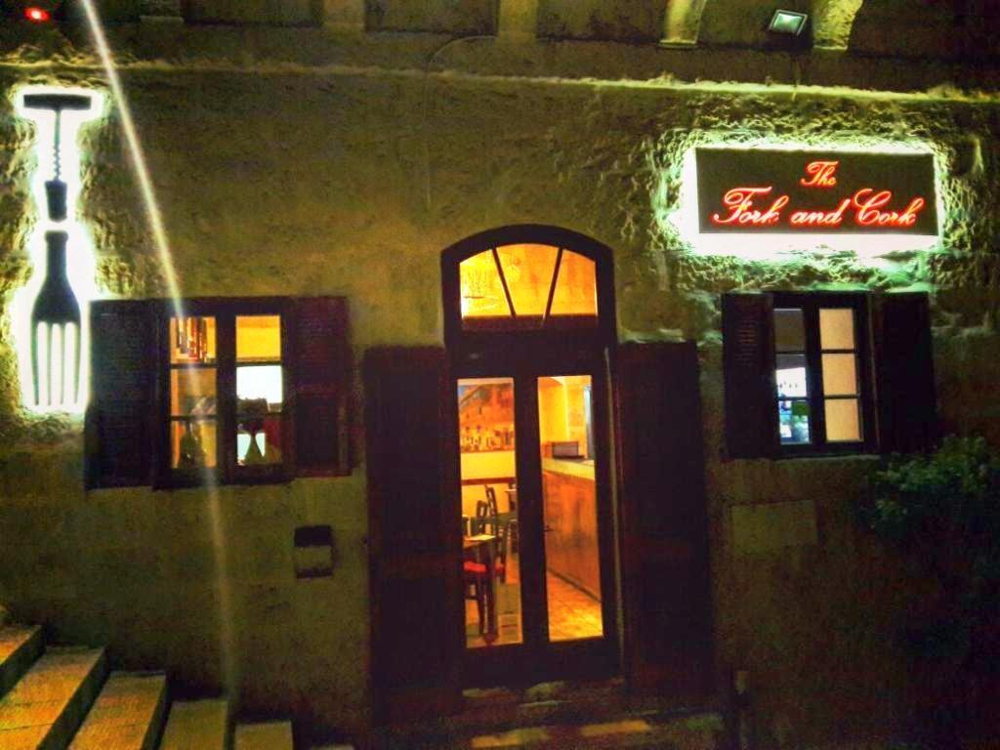
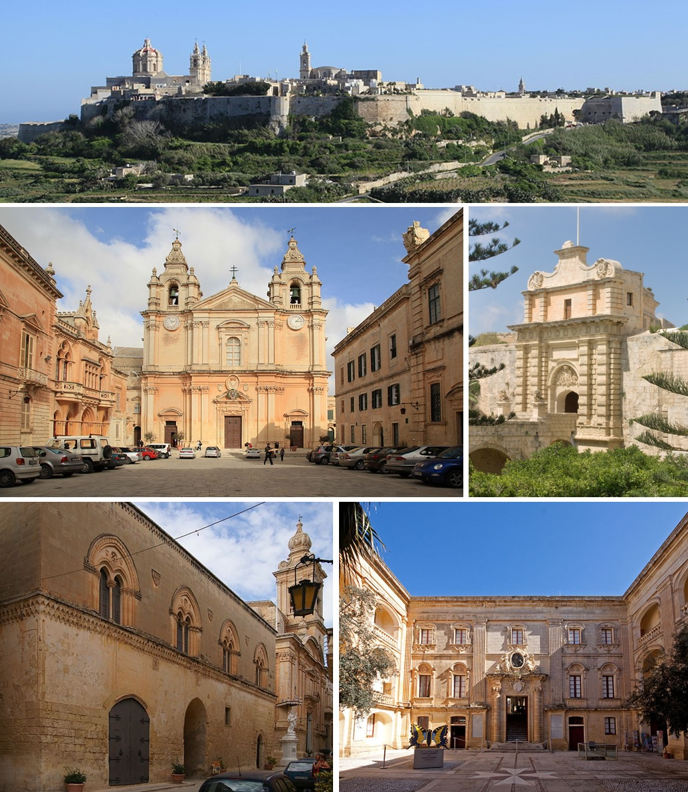

Opening a restaurant was a dream that Chef Carl Zahra thought would never come true. Thanks to a strong support system of friends and family and his own determination, that dream is now a reality. Our aim is to make you feel welcome and send you home feeling satisfied. Guests may enjoy delicious Mediterranean food from our a la carte menu or seasonal specials from the board. A selection of fine platters is also available. Tickle your taste buds with a lovely bottle of wine from our vast wine list. Vegan, Vegetarian & Gluten - free dishes are available! The special ingredients in Carl's cooking are Simplicity with a dash of Creativity. With dishes varying according to the ingredients in season, we promise you an interesting dining experience every time you visit. We look forward to host you at The Fork and Cork. Carl Zahra and his team
Chef patron Carl Zahra won the Junior Chef of the Year award in 2009 and with his extensive experience as a chef both in Malta and abroad, opened the Fork and Cork a few years ago. Great attention to detail and an eye for creativity and ambience have been paid with regard to the décor of this very popular restaurant. From the inviting facade to the cosy, intimate and romantic lighting and original scraped limestone walls of the interior, the restaurant is established inside a lower section of what was once a large 19th century family estate. The outside terrace offers a wonderful 180 degree view of the countryside – a perfect spot for al fresco dining. Chef Carl offers guidance on his tantalising daily specials and à la carte menu which changes seasonally. Specials depend on market availability and seasonal produce. Start with the warm salad of duck then move on to the beef sirloin with textures of onion. There are meats to share and wild locally caught fresh fish to choose from. Complete your meal with the apple tarte tatin or pistachio cheesecake, oat crumble and cherry sorbet. There’s an extensive wine list as well as grappa, single malt and blended malt whiskeys are available. The Fork and Cork is a great experience for lovers of fine food and in serene ambience.
